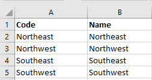
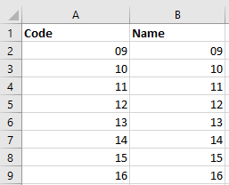
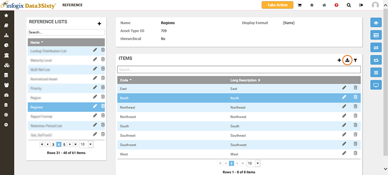
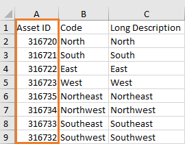
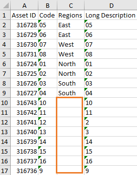
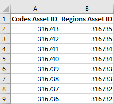
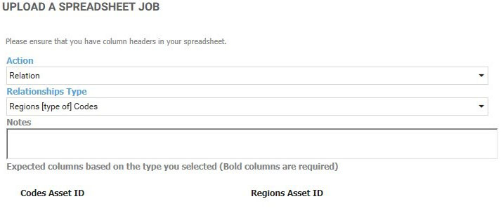
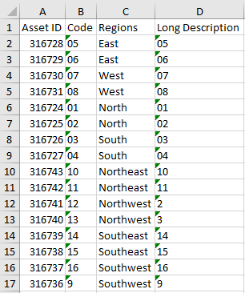

|
|
Bulk loading hierarchical reference lists
Tip: If you are not yet familiar with the concept of Bulk Loading, see the Bulk loading introduction topic.
As is the case for bulk loading objects with relationships, you must provide both parent and child asset IDs to complete a bulk load for hierarchical lists.
This example illustrates how you can use bulk loading to populate a parent list called "Regions" and a child list named "Codes" by running a bulk load Promotion action for each list.
Bulk loading list item data
- Click the Administration icon on the left of the screen and select Integration > Bulk Loader.
- In the top right corner of the History panel, click the Add button:

- In the Upload a spreadsheet job panel, select Promotion from the Action list.
- Select the Relationships Type of Reference Item: Regions.
- You can either use a spreadsheet that you have already created, ensuring that you include the required columns shown in bold, or, you can download a spreadsheet containing these columns by clicking the Download Spreadsheet link. In this case, we have created a Regions list spreadsheet which consists of the following entries:

These list items will be added to the existing Regions list items of North, South, East and West.
- Click Choose file to navigate to your Regions list spreadsheet and click Open on the Windows file navigation window.
- Click Save to bulk upload the Regions list items.
- Repeat the bulk load steps for the Codes list. This time, select the Relationships Type of Reference Item: Codes.
- Prepare a similar spreadsheet for the Codes list:

- Click Choose file to navigate to your Codes list spreadsheet and click Open on the Windows file navigation window.
- Click Save to bulk upload the Codes list items.
Relating the list data
Once you have bulk loaded the Regions and Codes list data, you need to execute a Relation bulk load to tell the system how the list data is related. This bulk upload requires that you use the list asset IDs for parent list items and child list items.
- Obtain the asset IDs for the list items:
- Navigate to the Administration > Reference page.
- Select the Regions list from the Reference Lists panel, then click the Export to Excel button to download the item details:

Asset IDs are listed for each list item in the exported spreadsheet, including existing and newly uploaded items:

- Repeat step b for the Codes list.
The Codes list export spreadsheet shows the existing and newly uploaded items, however, the newly uploaded items are missing the Region data because we have not yet executed the relate action:

- Relate the list items by taking the asset ID of each parent item and relating it to the child list item's asset ID in a new upload spreadsheet.
For example:

- Upload the completed relate spreadsheet, using the following settings in the Upload a spreadsheet job panel:

In this case, the upload action is a Relation action.
- When the upload is complete, you can export the Codes spreadsheet again to see that the correct relations have been created between the parent and child list items:
